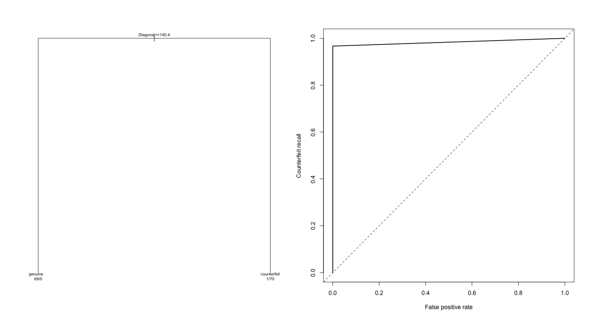

ABHINAV TANWAR · R ANALYSIS
Banknote Authenticity Tree
Held-out decision-tree evaluation with an explicitly defined counterfeit class.
Scope and methods
Loads the original mclust banknote dataset through the R package. The positive class is explicitly counterfeit rather than relying on factor order. A stratified 70/30 split is used; tree pruning uses only training cross-validation. ROC points are ordered by increasing false-positive rate before trapezoidal integration. Rank-based and manual AUC must agree. This fixes the potential negative AUC caused by curve orientation in the source.
Measured results
| Calculated measure | Value |
|---|---|
| rows | 200 |
| train rows | 140 |
| test rows | 60 |
| selected cp | 0 |
| metrics / accuracy | 0.9833 |
| metrics / recall | 0.9667 |
| metrics / precision | 1 |
| metrics / specificity | 1 |
| metrics / roc auc | 0.9833 |
| manual trapezoid auc | 0.9833 |
Tree Roc

Full result structure
{
"rows": 200,
"train_rows": 140,
"test_rows": 60,
"positive": "counterfeit",
"selected_cp": 0,
"metrics": {
"accuracy": 0.9833333333333,
"recall": 0.9666666666667,
"precision": 1,
"specificity": 1,
"roc_auc": 0.9833333333333,
"confusion": {
"actual_0": [
30,
0
],
"actual_1": [
1,
29
]
}
},
"manual_trapezoid_auc": 0.9833333333333
}